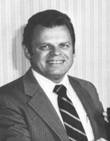
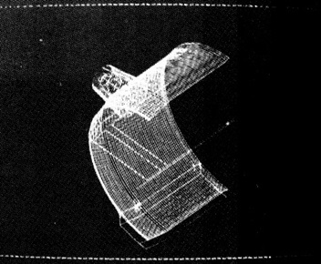
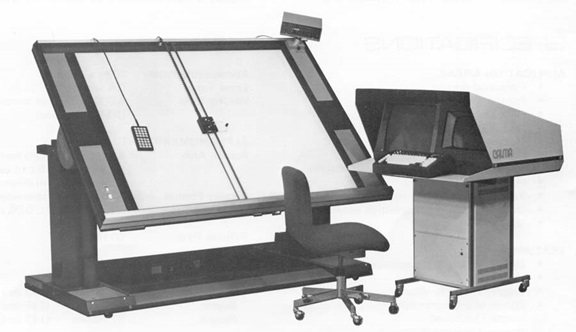
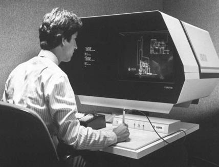
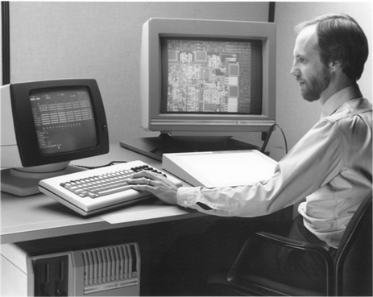
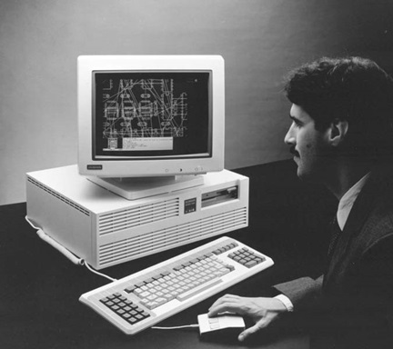
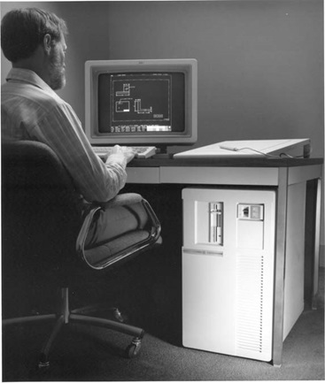
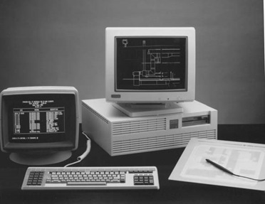

第11章：CALMA
作者说明：我于1972年2月至1973年10月在CALMA工作，起初在加利福尼亚州桑尼维尔的总部，随后在马萨诸塞州波士顿地区。本章的许多内容都基于我个人的经验。
Calma公司成立于1964年，位于加利福尼亚州桑尼维尔，创始人包括Ron Cone（CalComp的前工程副总裁）、Cal Hefte（CalComp设备在海湾地区的分销商）以及Cal的合伙人Jim Lambert。公司最初的产品是一种用于数字化石油和天然气井纸带图表的设备。随后，Calma开始制造大型数字化仪器，可用于捕捉其他计算机应用程序的数据，包括地图制作和集成电路制造。在这方面，它非常类似于Auto-trol Technology（见第9章）。
典型的Calma数字化仪器尺寸为48英寸x60英寸，采用技术上称为约束游标的设备。游标机构由X和Y方向的电缆装置控制。这些都是精心设计的单位，使用户能够快速地在放置在数字化仪表上的文档中导航。X和/或Y轴可以单独锁定，这使得这些单位特别适用于数字化半导体或印刷电路板（PCB）设计，当时这些设计往往由主要是正交形状组成。还有一个X/Y显示模块，显示当前游标位置，以及一个字母数字和功能按键键盘，用于输入命令和相关数据。输出可以是打孔卡或磁带。
到了1970年代初，三位创始人都不再积极参与公司管理，虽然Cone仍然担任董事会主席。总裁是Bob Benders，他在一两年前从洛克希德位于桑尼维尔的分部招聘而来。Benders在二战期间在欧洲长大，在管理上有着严格但公正的声誉。他于1971年成为总裁，为公司在1970年代末成为行业领导者做出了很多贡献。
最初的Calma数字化仪采用硬连线逻辑。当Benders加入公司后，他亲自指导重新设计了产品线，用基于计算机的控制方法取代了硬连线逻辑。公司选择的计算机是Data General NOVA 1200，同时期也是Computervision在使用的计算机。它是一台16位机器，类似于Digital的PDP-11。早期系统具有12K存储器，可扩展到32K（字，而不是字节）。与早期的硬连线单元一样，输出可以是打孔卡或磁带。这些数字化仪被称为CALMAGRAPHIC系统，其售价在25,000美元至55,000美元之间，高端型号包括磁盘存储功能。
将一个图形终端添加到系统中，以便在记录数据时查看和编辑数据，是CALMAGRAPHIC产品线的一个相当合理的扩展。1969年中期，公司聘请了一位杰出的年轻程序员Josef（Joe）Sukonick，他最近从麻省理工学院获得了数学博士学位，以编写所需的软件来创建交互式图形系统。他大多数时候是一个人开发的系统被称为Graphic Data Station或GDS。它于1971年推出，类似于基于磁盘的CALMAGRAPHIC系统，增加了一个11英寸的Tektronix存储管显示器。当数据被数字化时，它会显示在这个终端上。图形数据可以使用数字化仪光标机制进行编辑，控制函数可以使用键盘设备输入。

从硬件角度来看，GDS系统设计得非常好。两个特点对公司的销售工作非常重要。CALMA公司建立了自己的高速接口连接到泰克电子显示屏，而不是使用慢速的行业标准接口。这样就可以在显示屏上更快速地显示图形信息，比大多数竞争对手要更快。储存管显示屏需要重新绘制整个图像，如果在屏幕上除了添加数据之外有任何其他变化。如果用户删除了一行，整个图像都必须重新绘制。数字化电路布局包含相当密集的数据，如果没有这种专门的硬件，重绘时间将非常烦人。第二个特点是系统非常稳定。可以拔掉主电源线，使系统立即停止，然后重新插入电源。系统将从断电时的状态继续运行。今天的个人电脑试试看！
整个系统配置配备了集成电路晶片制造的GDS软件，但不包括售价不到10万美元的大型绘图仪。每台额外的工作站售价为35,000美元，而大型平板绘图仪的售价高达68,000美元。该系统设计支持最多6个工作站。
在此阶段，描述1970年代早期集成电路设计和制造的过程可能会有所帮助，因为今天的过程大不相同。第一步是以逻辑图的形式创建电路的功能设计。当时有几个计算机程序可帮助设计师分析电路的时间问题和逻辑完整性。下一步是在大型方格纸上绘制电路的图纸，使用不同的颜色来代表电路的每个层。这与许多年来设计印刷电路板的方法在许多方面相似。
集成电路图纸的尺寸是最终半导体芯片的数百倍。在1972年初，这些图纸通常的尺寸是48英寸乘60英寸或更大。下一步是制作每个电路层的实际电路大小的掩膜。通常，有4至8个不同的材料层用于制造电路。每个掩膜母版都会仔细地切成一片剥离涂层材料（一种常用品牌是Rubylith，仍用于图形艺术应用）使用的设备类似于反向数字化器，但是是手动操作的。如果操作员想创建一个矩形，则要通过上部材料切割矩形的四条线，但不通过基础材料。在划线内去除剥离涂层材料可以创建矩形区域。这是一个非常耗时且容易出错的过程。
接下来，将这些代表电路不同层的剥离涂层材料纸张以摄影方式缩小到集成电路的实际大小。这是使用大型固定格式相机完成的。用于制造电路的物理掩膜是使用称为步进器的精密仪器生产的。这基本上将电路层的源胶片复制为适合芯片实际大小的多次遮罩。 1970年代早期的典型晶片尺寸为直径不到4英寸，而现今的12英寸晶片则是技术的最新水平。
这种制作集成电路掩膜的方法存在几个问题。首先，它是慢而容易出错的。虽然有摄影技术可用于验证每个掩膜的准确性，但问题经常不被发现，直到生产出一批测试电路。其次，电路越来越复杂。这正是英特尔的戈登·穆尔提出“穆尔定律”的时候，这个定律指出半导体芯片上的逻辑元素数量每18个月翻一倍。存储芯片和微处理器的大小开始迅速增长，很明显，在未来几年内，该行业将需要一张篮球场大小的纸来布局新电路。像存储电路这样的芯片具有很大的重复性，但现有的手动过程将每个存储单元视为单独的元素处理。第三，仪器制造商开始生产由数字数据驱动的制作掩膜的设备。使用这些设备的唯一方法是将艺术品转换为数字格式。这三个问题的结果是一个适合自动化的行业。Calma成为半导体行业的主要系统提供者。
Calma的销售副总裁是Tom Cain，他曾在美国海军担任过上校，现居住在马里兰州贝瑟斯达。他被聘用是因为CALMA早期数字化器的销售大部分都是给像陆军地形指挥部和空军航空图表和信息中心这样的政府制图机构。我是在1972年2月被CALMA聘用，在加利福尼亚和亚利桑那的半导体工业中寻找业务机会。
当时，Calma只卖出了一套双工位GDS系统给Intel。该公司几乎没有销售资料和营销，而且还面对着Applicon和Computervision等几个激进的竞争对手。
Calma的优势在于它位于硅谷中心。它还采用了与Applicon和Computervision不同的市场开发方法。Calma专注于半导体公司的制造端，而尤其是Applicon则专注于设计芯片布局。Applicon在西海岸的代表是公司的创始人之一、前林肯实验室软件开发人员Dick Spann，他最终成为Adage的总裁，而Computervision的代表则是Bob Gauthie，他后来成为该公司的营销副总裁。
到1972年底，GDS系统的功能能力已经大大扩展，远远超过了最初卖给Intel的那套系统。最初，它只能处理水平和垂直线。只做45°线就是一个挑战。但Sukonik实施的基本单元导向架构是一个坚实的设计。Sukonick和随后加入公司的程序员们有能力在不减慢其基本显示操作的情况下向系统添加功能。这种单元导向还使开发团队能够将系统扩展到处理制图应用程序，包括能够将文本放置在符号旁边或内部，水平和垂直对齐。在许多小的递增步骤中，GDS系统逐渐成为基本的绘图系统。
与此同时，本德斯努力控制CALMA产品的成本。例如，公司不愿意将Nova 1200内存从8K增加到12K字，因为GDS软件的要求增加了。当时的计算机使用磁芯存储器，而不是半导体存储器，额外的4K字会使GDS系统的成本增加数千美元。
在那个时候，该公司主要的制造问题是在组装完GDS系统后测试硬件。主要组件是一个大后面板，其中包含整个系统的互连逻辑，包括高速图形界面和与制图仪和数字化仪等外围设备的接口。这些面板是用线包裹的，这意味着每根线的末端都要手动绕在特定的连接器上。尽管从事此项工作的女性很仔细，但错误仍然会出现，而且很费时间去找出错误。 CALMA将其系统结算过程作为培训现场工程师的主要手段。虽然它的效果还算不错，但每个系统的结算仍然需要几个星期时间。采用线包裹法的优点是可以快速进行设计更改，并在已经在现场的系统中必要时进行改进。
Calma支持多种不同的输出设备。典型的系统包括CalComp鼓或平板绘图仪，或Xynetics平板绘图仪，用于生成检查图。 CalComp平板绘图仪还可以配备切割机构，使用先前描述的剥离涂料材料制作IC掩模母板。另一方面，Xynetics绘图仪是一种非常快速的笔条绘图仪，使用磁性技术来控制和移动绘图机构。 Calma还开发了软件，用于驱动DW Mann Corporation制造的光学设备，用于生产掩模布局。到1973年中期，Calma已经向许多半导体制造商和为行业提供掩模制作任务的服务公司销售了GDS系统。除了英特尔外，客户还包括国家半导体，摩托罗拉，洛克韦尔，MicroMask和Transmask。
此时，公司正在产生足够的收入，以加强其工程和软件开发活动。首先之一是创建一个编辑站点，该站点使用Computek平板和笔代替大型数位输入设备。还在扩展GDS软件，包括基本绘图和印刷电路板布局和艺术品生成方面取得了实质性进展。此外，由罗杰·斯特金指导，启动了一项映射应用程序的开发。在1974年推出了业界首个面向用户的开发语言之一，即图形编程语言（GPL），并于1975年推出了处理任意角度集成电路元素的功能。
新机械CAD系统的发展
正如第12章提到的，卡尔玛（Calma）在1976年聘请了大卫·阿尔伯特（David Albert）和许多前计算机视觉（Computervision）编程人员。这些人大多数都拒绝了计算机视觉搬到波士顿地区的要约，因为该公司决定整合其软件开发业务。最初，阿尔伯特和他的同事考虑成立自己的软件公司，其中一个最早的潜在客户是卡尔玛。除了阿尔伯特外，该团队的主要成员还包括杰瑞·德韦尔（Jerry Devere）、格伦·彼得森（Glen Peterson）、罗恩·伊亚涅塔（Ron Ianneta）和约翰·考夫曼（John Kaufman）。当时卡尔玛研发活动负责人艾特·科尔迈尔（Art Colmeyer）建议他们加入卡尔玛成为员工，而不是作为承包商工作。经过几个月的谈判，圣迭戈小组成为卡尔玛的一部分，并开始开发新的CAD系统。
结果产品名为DDM（Design Drafting and Manufacturing），于1977年推出。用户可以显示三维模型的最多六个独立视图，对任一视图的更改会立即反映在其他视图中。几何构建操作可以在一个视图中启动并在另一个视图中继续。隐藏线软件特别快速，模型视图可以以隐藏线抑制或在单独的线字体中显示。在六个独立视图中，隐藏线可以以不同的方式显示，六个视口也可以具有单独的缩放。用户可以使用配备数字化板的工作站或使用平板电脑和笔进行设计/编辑的工作站与系统交互。所有命令都显示在数字化板或平板电脑菜单上。这些菜单由键盘命令输入和可编程的32个功能键补充。
DDM最初是为Data General计算机编写的，很像该公司的其他系统。它是用FORTRAN V编写的，并使用Data General的实时磁盘操作系统（RDOS）的修改版本。每个工作站都包括两个显示，一个用于图形，一个用于字母数字数据。这种设置是由于当时使用的Tektronix存储管显示器不利于显示快速变化的字母数字信息。这类似于卡尔玛用于其他应用程序的配置。字母数字屏幕主要提供用户提示，包括当前执行的命令选项列表。
Calma系统从20世纪70年代初期就以快速系统响应时间著称，DDM在软件和硬件特性方面保持一致。
DDM可能是第一个将几何数据存储在双精度64位格式中的机械CAD系统。公司的销售文献声称，DDM能够比竞争系统更快地显示三维模型，这些竞争系统只能显示二维图像。
一个名为DAL（Design Analysis Language）的用户开发语言从一开始就是DDM的一个组成部分。DAL提供了用户访问所有DDM命令的能力，而一些竞争系统则限制了哪些功能可以并入用户程序中。DAL也用于将重复的一系列命令分组，以便能够一次性执行它们，将科学公式并入几何创建操作中，并将DDM接口与现有的FORTRAN程序进行交互。DAL创建了一种中间对象代码，每次执行不需要重新编译。相反，它以解释方式运行，类似于当时运行BASIC程序的方式。这些程序可以保存在库中，通过名称或通过分配给菜单项来执行。公司的促销文献声称，生产力的提高在7:1的范围内是典型的，而使用专门的DAL程序可以实现50:1的改进。
DDM基本上是一个线框模型系统，具有曲面建模能力。曲面建模软件是与犹他大学的人们一起开发的，它处理平面、圆柱体、旋转曲面、标尺曲面、带有制表符的圆柱体和雕刻或自由形式曲面。曲面建模是一个可选的软件包，用于上面描述的隐藏线消除操作。见图11.2。Calma提供的其他DDM应用包括运动学和有限元建模包，以及数控磁带制备程序。后者生成用于轮廓加工、镗孔、车削操作以及三轴和五轴表面加工的工具路径。

Calma 出售给联合电信
1978 年 8 月 31 日，Calma 被 United Telecommunications 收购，每股约为 29 美元，约 1,900 万美元。United Telecommunication 现在被称为 Sprint Corporation，是移动电话服务的主要提供商。下表显示了 Calma 在 1970 年代的财务增长情况。公司财政年度截至 8 月 31 日。主要问题是公司似乎从来没有太多现金（1977 年 8 月 31 日不到 20,000 美元），应收账款通常很大，经常超过销售额的 150 天。
| 财政年度 | 收入 | 收益 |
|---|---|---|
| 1971 | $670,000 | ($293,000) |
| 1972 | 1,586,000 | 179,000 |
| 1973 | 3,462,000 | 412,000 |
| 1974 | 6,146,000 | 562,000 |
| 1975 | 6,919,000 | 438,000 |
| 1976 | 9,484,000 | 747,000 |
| 1977 | 14,279,000 | 1,230,000 |
联合电信收购了Calma之后，对该公司的管理采取了放手不管的态度。现有的管理团队继续留任，包括：
Bob Benders - 总裁
Lemuel Bishop - 财务副总裁
阿瑟·柯尔迈耶博士 - 研发副总裁
尤金·埃默里希 - 市场副总裁
保罗·肯普 - 销售副总裁
1979年末，该公司的主要业务仍然是为集成电路设计和PCB提供电子艺术生成系统。当时，Calma被大多数观察家认为是半导体行业图形系统的最大供应商。1978年，GDS软件被移植到32位Data General计算机上，公司开始提供支持电子束图案生成机的软件。这在1979年之后被高分辨率彩色图形终端和高速静电绘图仪的支持所跟随。那个时代的一个典型的存储管工作站如图11.3所示。
公司也开始在机械CAD市场上发展显著的存在，并销售地图和工程设计系统。在这些后者领域，主要客户包括布鲁克林燃气和电力以及安大略省水力发电。Calma的销售额每年几乎翻一番，约有500名员工，估计1979年的收入约为4000万美元。这大约是Applicon、Auto-trol Technology和M&S Computing（Intergraph）当时的收入水平。

将DDM扩展到AEC市场
在1980年初，Calma被组织成两个业务部门：Collmeyer担任微电子部门的副总裁兼总经理，而Ronald Hill则在机械部门担任同样的职位。机械部门也负责开发和营销面向AEC市场的系统。尽管旧的Calma系统可用于基本的绘图应用程序，但在处理厂设计领域，需要更先进的设计技术。
计划开发一系列面向AEC市场的设计应用程序，这些应用程序将使用DDM作为底层几何建模器。该项目被称为CADEC（工程师和建筑师的计算机辅助设计/绘图/文档编制）。正在开发的模块包括建筑绘图、土地建设、结构和工艺工程，包括流程图、P＆ID、管道、机械、电气和暖通空调。这是一个相当有野心的项目，但并没有太多行业的关注度。此计划的首席经理是吉姆·兰伯特（Jim Lambert），他担任AEC系统总监职称。
到1980年中期，CADEC已经发展到了使用软件的六个测试站点阶段，其中有三个位于美国，另外三个则在国际上。美国的首席用户是波士顿的斯通＆韦伯斯特。最终，CADEC将演变为Calma的Dimension III产品，如下所述。[2]
通用电气加入画面
1980年12月，购买了Calma不到30个月后，美国联合电信同意以高达1.7亿美元的现金将公司出售给通用电气。这包括在销售完成时的1亿美元现金支付以及在随后四年内根据Calma的收入支付的高达7,000万美元。美国联合电信已决定，Calma的系统制造业务根本不适合其其他计算机服务活动。即使没有额外的支付，这也是后者1900万美元投资的相当不错的利润。
在1981年4月初完成交易之前，联邦贸易委员会表示担心GE拥有将近23％的Applicon股份和收购Calma是反竞争的。虽然不清楚其随后的行动是否是来自FTC的直接请求，但GE很快宣布，将在未来12个月内出售所拥有的120万股Applicon股票。1980年对于Calma来说是个好年份。收入增加到6200万美元，公司以1700万美元的积压订单进入1981年，Calma的1000名员工已经进驻了新的位于加利福尼亚州米尔皮塔斯的设施，其中包括一座20.4万平方英尺的制造工厂。按收入计算，该公司与Intergraph竞争第三名，追逐Computervision和Applicon，后者位列第一和第二位。
提供GE资源给Calma的首要步骤之一是在Calma的DDM软件和通用电气信息服务组织提供的软件之间建立通信链接。当时，GEISCO是领先的分时公司之一，并为其客户提供NC后处理服务等应用程序。它还以分时共享方式提供APT零件编程。虽然这些服务以某种方式对所有制造公司都可用，但Calma和GEISCO都在一个公司屋檐下为Calma的销售组织提供了额外的营销力量。
收购Calma并非GE的随意之举。该公司正在组建一组企业组织，以推广其所谓的“未来工厂”产品和服务。该公司的观点是，计算机和通信系统将对制造商未来的产品设计和生产方式产生重大影响，并打算成为这一市场的主要力量。回过头来看，这是一个完全合理的概念，并最终证明是正确的。在杰克·韦尔奇的领导下，GE的企业态度是，一家公司在特定市场领域要么是第一要么是第二，否则就退出该业务。GE继续向Calma注入数百万美元，以扩大其产品开发和营销活动，但从未能使该公司盈利。在拥有Calma的七年中，亏损高达5000万美元。虽然美国联合电讯采取了相当放手的管控方式来管理Calma，但GE很快就着手将其打造成一个“GE”公司。这并没有得到Calma的许多经理人的认同。哈维·琼斯（Harvey Jones）就是一个很好的例子，他于1974年加入了该公司。在公司的开发组织中服务一段时间后，琼斯开始在Calma的电子设计和艺术品生成产品的销售和营销方面担任愈加重要的角色。在获得麻省理工学院斯隆学院工商管理硕士学位后，琼斯被任命为GE工厂未来的商业拓展副总裁。
通用电气的未来工厂
杰克·韦尔奇于1981年4月1日成为GE的董事长，恰好在该公司完成了对Calma的收购并宣布了未来工厂业务计划。GE理所当然地被认为是世界上管理最好的公司之一。这并不意味着它所涉及的一切都会变成金子。未来工厂是一个很好的例子，即使是管理良好的公司有时也会搞砸。当GE推出其计划时，它似乎是理想的公司，因为它不仅销售各种技术产品，而且还是一个重要的制造商，其工厂制造从家用电器到机车等各种产品。
计划是将自动化工业工厂所需的所有技术组件集中在一个组织中。其中几个必要的产品线，包括用于操作金属和纸厂的工业驱动器和车间虎钳的控制，已经是GE广泛产品线的一部分。其他元素，如机器人设备，将在其他制造商的许可下销售，而一些元素，如工厂楼层通信系统，则将在内部开发。Calma将提供设计这些自动化工厂生产的产品所需的工具。GE的高层管理人员认为这是为大型工业公司提供“一站式”购物的机会。
自动化组，正式称为工业电子业务组，最初由唐纳德·格里森（Donald Grierson）负责，他显然是该公司快速发展轨道上的高管。在接受这项任务之前，他在GE的五年里担任了五个不同的职务。尽管公司内部认为他是一个深思熟虑的战略家，但在运营业务方面他还有很多需要改进的地方，而自动化组是一个非常复杂的业务。其中一部分问题可能是由于该组的总部位于弗吉尼亚州夏洛茨维尔，而操作活动分散在全国各地。在上世纪80年代，我们今天为运行分散式组织所理所当然使用的许多工具都是不存在的。格里森当然对这个领域的潜力非常热衷。在一份新闻发布会上，他曾表示：“GE有意将生产率提高到极致。”
回顾起来，GE在这个领域的失败可以归因于试图太快推进。该公司设定了非常高的收入目标，并承诺向前景提供一套先进的产品，这些产品的开发时间远远超出了最初的预期。结果是，其中一些产品，如工厂通信系统，遭遇了可靠性问题。该公司最初承诺前景，将保证提供完整的工厂自动化解决方案，包括机床等设备，其实它只是作为代理商。到了该履行这些承诺的时候，GE却开始犹豫。
1982至1984年间，根据《财富》杂志的报道，自动化小组损失了超过1.2亿美元。这个数字远远超过GE在推出该计划时的预期。格里尔森于1985年7月离开GE，最初成为一位私人投资者，最终加入ABB Vetco Gray（一家油气服务公司），担任总裁和首席执行官，直到2002年。自1987年以来，他还一直是Parametric Technology的董事会成员。正如下文所述，1984年Calma与自动化系统组分离，最终GE采取了一种更为低调的方式来处理工厂自动化系统的整个问题。近20年后，人们回顾其在这个领域的努力，可以看出该公司仅仅超前了市场接受这种基础制造基础设施的广泛改革的意愿。[6]
微电子分部。 GE收购该公司后不久，琼斯离开卡尔玛，共同创立了Daisy Systems，这是最早的基于工作站的计算机辅助工程（CAD）公司之一。在担任销售和市场副总裁以及Daisy的总裁之后，他继续成为另一个CAE初创企业Synopsys的总裁-一家重要的CAE公司。这是公司难以承受的才华，但未来几年将一再发生。
人事变动涌现，其他长期卡尔玛主管决定GE的管理环境不适合他们，并且随着GE引进自己的人员，一些人来自GE内部，一些人是新的雇用。1981年6月，杰弗里·莱恩从波音公司聘为高级产品开发经理，约翰·本博从Dataskil聘为研发副总裁。阿特·科尔梅耶自1974年以来一直在卡尔玛，是公司微电子分部的副总裁和总经理，在1981年底前离开，创立了Weitek，这是最早的无晶圆厂半导体制造商之一。吉姆·吉兰德曾担任该部门的销售副总裁，接任了科尔梅耶的工作。他一直坚持到1983年初，那时他也离开加入Weitek。罗杰·斯特金和汤姆·贝基（Tom Bakey）自上世纪70年代初加入该公司，负责开发GDS II系统，并于离开加入TRICAD，这是一家新成立的公司，针对AEC市场。后来，该公司被Auto-trol Technology于1984年11月收购。
1981年秋季，Calma替换了Applicon成为SDRC首选的CAD / CAM合作伙伴。 GE和SDRC同意在美国和欧洲设立五个生产力中心，配备Calma CAD / CAM系统以及GE机器人设备和NC控制器。客户可以雇用SDRC处理设计和制造项目，也可以使用自己的人员。当然，GE的战略目标是提高其客户对这种新型技术的认识程度，希望成为这些公司的主要设计和工厂自动化工具供应商。7
1981年11月，GE公司在密歇根州底特律的AUTOFACT大会上展示了Calma和未来工厂的总体规划。在一个缩小版的生产力中心中展示了许多新的计算机辅助设计产品，以及一个名为DDM / Solids的新实体建模软件包的预览。GE据称在这个贸易展会上花费了160万美元。1982年1月，GE收购了Structural Dynamics Research Corporation（SDRC）48％的股份，并开始将SDRC的机械CAE软件整合到Calma产品线中。除了这个安排外，GE还收购了CAE International的大部分利益。该公司现在由GE拥有51％，SDRC拥有49％。传闻称GE准备在未来的工厂计划中投资超过10亿美元，CAE International和Calma是该计划的关键要素。
总体概念是，SDRC将提供概念设计和分析工具，Calma将提供将这些设计转换为制造所需信息的系统，其他GE部门将提供工厂自动化。然而，这个伟大的概念从未完全实现。使上述情况混乱的是，Calma最近宣布了自己的实体建模软件DDM / Solids。这个软件包最初在16位Data General系统上实现，后来移植到32位DEC VAX机器上。此产品从未起飞，被一项与Calma市场营销的SDRC GEOMOD协议取代。结果发现，DDM / Solids实际上并不是一个实体建模器，而只是产生曲面定义模型的阴影图像。在接下来的数年中，这两个公司仍然有分开的销售组织，只是松散协调它们的活动。
Calma的市场推广人员有时会夸大描述该公司的产品和业务发展。例如，1981年12月，Calma宣布成立了一个AEC部门，并声称是“唯一一个完全致力于AE＆C市场的CAD / CAM制造商。”这可能会对像Computervision和Auto-trol Technology等已经以类似方式组织的竞争对手来说是一个惊喜，尽管他们可能从未使用过“部门”这个术语。Calma AEC部门的负责人是Ronald Hill博士，他于1978年加入该公司。Hill以前在Tektronix（泰克电子）工作。
GE的团队将继续扩大Calma的产品线
从其最早的1971年基于计算机的系统开始，Calma一直使用Data General计算机。到1982年秋季，该公司仍在使用Data General Eclipse计算机，但正在探索支持Apollo工作站和DEC VAX计算机的可能性，特别是针对其机械和AEC软件产品。此时有三个Eclipse硬件版本。Series 1000是支持两个工作站的单柜配置，Series 2000是支持最多六个工作站的单处理器或双处理器系统，而Series 170是一款低成本的单工作站系统，于1982年9月推出。Calma提供高分辨率（1280×1024）彩色和单色工作站以及低分辨率（640×512）彩色单元。Calma的典型工作站有两个显示器，一个显示图形信息，一个显示字母数字数据。异常的是，Series 170采用了单屏配置。典型的Series 1000和Series 2000系统每个座位售价约为125,000美元，不包括绘图输出设备，而170的价格略低于100,000美元。
DDM软件包括可选模块，用于有限元建模、实体建模和塑料注塑模具设计和分析。实体模块采用边界表示法技术，创建与现有DDM数据库兼容的模型。公司还试图在某种程度上将其机械和电子活动混合在一起，推出了DDM/PC软件包，支持使用DDM用于机械设计的同一数据库进行印刷电路板设计。
除了在电子CAD市场上占据主导地位和日益涉足机械领域外，Calma还在AEC市场上大力推进，特别是在工艺厂设计方面。该公司在此领域的主要产品，最初于1981年发布，称为Dimension III。这是先前称为CADEC的版本。Dimension III软件的第二个版本于1982年初开始发货。它包括基于用户输入的管路规格和布线的自动管路设计。
在1982年中期，Dimension III产品套件得到扩展，包括电气原理图，包括信号网络列表和从-到报告的生成，民用场地准备，一般映射和钢筋布置，设计和详细描述。尽管该公司提供了称为Calma-Draft Architecture和Calma-Draft Facilities Layout的二维建筑和设施布局程序，但Calma从未以任何活力追求纯建筑设计和草图市场。

该产品线的微电子部分继续使用整体GDS命名法。具体应用包括用于印刷电路板设计和分析的CARDS。它包括设计规则检查，互动布线和支持多达64层。随后的一个版本称为CARDSII，增加了混合电路设计功能。CHIPS是用于集成电路几何设计的相应软件。
STICKS是公司首次尝试为VLSI电路开发符号设计方法论。STICKS随后更名为CustomPlus。该公司是Apollo工作站的早期用户，当其与名为CIRCUITS的逻辑设计系统结合在一起时售价为75,000美元。
Calma在使用语音识别录入用户命令方面是行业开拓者之一。在1980年推出时，它最初需要使用Calma的矢量存储器显示器（VMD）。随着GDS II Release 4.0的推出，所有Calma光栅终端都可以使用语音输入。早期语音识别系统的词汇量为100个命令。然而，很少有组织最终使用了这项技术。1982年，Calma还推出了其第一个通信网络套装，名为CalmaNet，可以连接各种系统和应用程序。
1982年秋季，Calma的销售力量仍然独立于GE运营，但《安德森报告》预计GE将提高这些销售人员在其客户中的接触水平。在其1982年9月版中，该新闻简报称：
“微电子领域的增长速度正在减缓，但Calma凭借DDM基于产品在机械应用领域能够利用这一高增长率。我们预测GE/Calma将成为本十年末排名第一或第二的 CAD/CAM 系统供应商。IBM拥有更多的销售能力，但GE在自动化工厂的产品方面更具优势。”[12]
鲍勃·本德斯最初留任GE和Calma的总裁，研发预算增加到收入的25％。
问题的早期迹象
1983年初，吉姆·吉兰德离开加入Wietek，肯·提索维克成为销售副总裁。然后在1983年4月，Calma宣布了一系列员工削减，只有40名员工，但这一举动并不是一个好迹象。同时，曾近15年领导该公司的鲍勃·本德斯辞去了总裁职位。1983年3月，本德斯的继任者是罗伯特·斯穆兰德，这位25年的GE老将。像施蓝贝尔及其子公司Applicon一样，GE似乎相信，任何经验丰富的高管都可以管理像Calma这样的公司，即使这个人是一个新的、快速变化的高科技行业的新手。
在相当短的时间内，整个新管理团队从其他GE部门招募，包括：
马克·巴伦博士担任研发副总裁（来自通用电气微电子中心），
查尔斯·奇斯曼博士担任市场营销和产品管理副总裁（来自通用电气电子系统部门），
乔治·森担任运营和产品支持副总裁。
来自GE核控制与仪表部门的Gerald Knudson担任销售副总裁（来自GE医疗系统部）；
来自GE核业务集团的Richard Overholtzer担任财务副总裁；
这个团队可能对管理像Calma这样规模的子公司来说有些过于资深了。此外，他们对于CAD技术和商业软件行业的经验很少；Lief Rosqvist原本担任Calma的市场副总裁，于1982年从瑞典移民美国，后来改任商业规划和发展副总裁；并非所有新高管都来自GE。David Richards被从Arrigoni Computer Graphics挖来，成为公司AEC业务部门的负责人；其他关键人物包括Jerry Devere，他现在接替David Albert管理圣地亚哥的软件开发业务；Malcolm Davies博士则是AEC产品组的副总裁，后来离职并成为Autodesk的高级高管。
卡尔马（Calma）的产品线变得更加复杂
1983年6月，卡尔马重申其对Data General硬件的承诺，宣布GDS II将在DG的Eclipse S280小型计算机上得到支持。卡尔马为这台机器定了一个名字叫P 4280。但是，情况在1983年9月变得有些复杂，当时卡尔马在斥资1400万美元收购了电讯卫星公司（COMSAT）位于德克萨斯州奥斯汀市的工程子公司CGIS之后，又加入了TEGAS的电子CAE软件套件。 TEGAS在Apollo工作站上运行，而卡尔马已经在使用这些工作站来支持其一些机械设计和原理图捕捉软件包。大约在同一时间，卡尔马在纽约州特洛伊市的伦斯勒理工学院建立了一个名叫卡尔马先进系统（Calma Advanced Systems）的研发小组。值得注意的是，GE的“未来工厂”的主要技术中心距离这里只有几英里。
在硬件领域，卡尔马又进行了一次重大的方向性变化，与Ramtek签署了一项 Oem 协议，为这家公司的2020彩色光栅显示器支付了2,000万美元的费用，这项协议将持续几年时间。卡尔马一直在使用Lexidata 的图形硬件来支持其光栅终端，而在逐步推出Ramtek产品的同时，它还将继续使用这种硬件。该公司的Apollo产品线被称为D3200系列，该系列包括三种类型的节点，S（标准）、D（分布）和P（外设）。后两个基本上是服务器节点。由于Calma的许多软件都是为了支持分别的图形和字母数字显示而编写的，因此D3200 S节点包括单独的字母数字显示。
根据Dataquest，卡尔马在1983年的收入为2.1亿美元，其中1.05亿美元来自机械领域、8200万美元来自电子领域，2300万美元来自AEC领域。超过一半的机械收入和相当一部分的电子收入来自于向其他GE部门的销售。预计1984年的收入将在2.5亿美元左右。但是事实上，与1983年相比，1984年的收入基本持平或略有下降，而1983年很可能是该公司的最高峰。
GE、Calma、SDRC和共同拥有的CAE International之间的关系对外界观察者来说最令人困惑。在1984年3月的芝加哥国家设计工程展览会上，Calma和CAE International宣布了一款基于SDRC的I-DEAS建模和分析软件，包括SDRC的GEOMOD实体建模器共同开发的机械CAE软件产品。承诺在10月交付用于两个产品线之间的直接翻译器，而IGES翻译器计划在5月发布。从1985年开始，Calma开始销售另一个SDRC软件包GEODRAW，该软件允许用户直接尺寸和注释在GEOMOD中创建的实体模型。在其中，没有双向关联，GEODRAW中所做的更改不会反映在源GEOMOD模型中。
这款软件可以在VAX和Apollo硬件上使用。计划考虑将在GEOMOD中开发的设计转移到Calma的DDM系统中进行详细的设计和文档编制，而SDRC的分析软件将用于评估这些设计。CAE International的软件可以打包或不打包销售，而Calma的DDM软件仍然只与计算机和图形硬件一起销售。除了计划更加紧密地将两家公司的软件联系在一起之外，还宣布将单一销售组织取代此前分别专注于机械市场的独立的CAE International和Calma销售团队。消息是这一举措是直接响应杰克•韦尔奇的建议。
与IBM的新关系
1983年，Calma开始与IBM讨论后者的计算机是否可以作为其系统的数据库管理元素使用。根据Calma的营销和产品管理副总裁Charles Cheesman博士的说法，“现在由于新技术，是时候把分析程序链接到工程中并进行后台处理（无论是分析还是数据处理）。这需要一个大而强壮的CPU。” 1984年6月，Calma宣布将重新销售IBM的4300系列计算机以及Calma软件，用于数据管理应用程序。这与Computervision与IBM达成的同类型协议类似。
1984年后期，Calma公司通过收购一家原本为Gene Amdahl公司Trilogy Ltd.建造的，面积达108,000平方英尺的设施，扩展了其在欧洲的业务，这家设施位于爱尔兰都柏林附近。
同年秋季，DDM公司推出了新的用于生成零件族的软件——Parametric Analysis Level（PAL），并与DDM的DAL软件配合使用。用户首先使用PAL软件设计一个样品DDM零件，PAL记录下DDM会话，并创建变量表，列出宽度、长度、厚度和其他关键尺寸。完成样品零件后，PAL记录被转换成DAL程序。
当用户需要新的零件时，就启动该DAL程序，输入变量尺寸的值，并执行DAL程序以生成所需的零件。尽管用户可以直接创建类似的DAL程序，但PAL不需要了解DAL程序的知识，因此更高效，任何熟悉DDM的用户都可以使用它。1985年初，PAL最初在DEC VAX和Data General系统上推出，售价为17,500美元，包括安装和培训。
1984年11月，Smuland被前IBM高管Daniel McGlaughlin博士取代，成为Calma的总裁。 McGlaughlin于几年前被GE招募，曾担任GE公司的企业信息系统副总裁，后负责运营Calma。Smuland则转任GE的船舶和工业发动机服务部门，担任副总裁兼总经理。
与管理变更同时，该公司减少了15％或305名员工。尽管Smuland曾直接向Don Grierson报告，但新的组织结构使McGlauglin向由五名高级GE行政人员组成的新成立的Calma董事会报告。其主席是GE的副主席Edward Hood Jr.，直接向Jack Welch汇报。 McGlaughlin在电气工程硕士学位以及在IBM工作的24年经验方面都非常出色，是领导Calma的合适人选。
1984年底Calma产品系列概述
Calma提供了三种计算机平台。D系列基于Apollo工作站，目前只支持DN460和DN660机型。P系列由Data General ECLIPSE计算机组成，而C系列系统则是DEC VAX机器。这些产品系列都包括一个称为系统基础组或SBG的核心模块。此外还增加了各种外围设备，在Data General和DEC计算机的情况下还配备了图形终端。Calma在1984年末为三个市场提供软件，分别是电子、机械和建筑工程。正如其他地方所述，主要电子软件包是仍在Data General计算机上运行的GDS II。GDS II软件套件包括CHIPS（IC设计）、CARDS（PCB设计）和STICKS（IC概念设计）。TEGAS逻辑仿真软件在Apollo工作站上运行。DDM针对机械市场，Dimension III则是AEC产品。
提供了各种单色和彩色终端。到1984年底，同时具有图形显示和字母数字显示的工作站RB-1010和RC-1010正在逐步淘汰，并被单屏幕单位CDS-70X和CDS-80X所替代。后者由Motorola 68000微处理器驱动，并配备1280×1024显示器。一种名为CALMANET的以太网功能可用于将所有这些不同的系统连接在一起。在此期间，从来没有明确表示哪个是首选平台，尽管显然，Data General产品线的未来非常有限。看起来Calma愿意让客户在Apollo和DEC硬件之间选择。
DDM软件有四个版本可供销售，DDM-100用于绘图，DDM-200用于设计，DDM-300用于制造，DDM-400用于原理图。这个软件包最强大的特点可能是它的DAL语言，甚至让公司的竞争对手印象深刻。DDM/Solids不再在市场上销售。相反，Calma推出的主要实体建模软件是SDRC的GEOMOD软件。该公司还在推广SDRC开发的数据管理软件Data Management Control System（DMCS）。该软件后来演变为SDRC的Metaphase（见第17章）。Dimension III基本上是DDM软件，具有主要由DAL编写的AEC扩展。这些应用包括管道设计，电气原理图，钢材详图等。
该公司的圣地亚哥软件操作正在开发一种以立体建模为核心的新机械系统，由Devere指导。其他开发包括使用Ramtek 2020显示器的新工作站，GE与Ungermann-Bass共同开发的工厂地板通信网络，基于个人计算机的系统以及用于替换DMCS的新数据管理系统。
典型的带有DDM或Dimension III软件的彩色Apollo DN660工作站价格为67,500美元，Data General系统售价为170,000美元起，而VAX 11/780系统的成本超过500,000美元。后两种系统的CDS-80X彩色工作站价格为60,000美元，而单色CDS-70X单位每个价格为40,000美元。
开始/停止业务势头
虽然GE收购Calma的主要目的是推动未来工厂的发展，但该公司正开始在其AEC产品方面取得重大进展。Calma赢得了来自密西西比州帕斯卡古拉的英格尔斯船厂的三度元系统的一项重大竞争订单，与佛罗尔公司签订了一项多年合同，并向芝加哥的公共电力公司出售了一套价值270万美元的系统。该公司继续投资于开发其工厂设计技术，包括与英国帝国化学工业公司签订协议，以推广ISOGEN，一个用于创建等距斜管图的软件解决方案，但直到1986年中期，Calma才开始运送基于ISOGEN的软件包。[18] 1985年底，该公司与中国国家进口公司签订了一项780万美元的协议，向13个场地提供60套基于阿波罗的三度元系统，用于现代化电力和工艺设施。
1985年初，Calma开始响应市场对更新的GDS II系统的需求。一款32位GDS II工作站，包括Data General的MV-4000计算机和Lexidata彩色显示屏，在1月份推出。名为GDS II/32，价格为95,000美元，比旧系统的上市价格低30％，但这不是一个独立的系统 - 它需要与现有的16位GDS II系统连接，以进行绘图等后台任务。[19]
1985年4月，Calma退出了达拉斯的NCGA会议，展览空间被SDRC和GE / CAE使用。大约在同一时间，韦尔奇批准了1亿美元的现金注入Calma，并明确指示成为CAD行业的第二大公司，或最差情况下成为第三大公司，并在三年内实现。但这从未发生过。
为了扩大机械市场的覆盖范围，Calma推出了一款可与现有装配建模软件一起使用的钣金包。然而，真正让人困惑的是之前提到的计划，即市场营销SDRC的GEODRAW，这是一款支持GEOMOD实体模型的二维制图软件，显然与DDM制图软件竞争。
到1985年秋季，Calma在积极推广其产品线中的Apollo部分。除了GDS II之外，其几乎所有软件包都可在这些工作站上使用，包括DDM，Dimension III，TEGAStation和T-BOARDS。竞争对手如Auto-trol Technology正在推广Apollo的低成本系统，而Calma则强调高端DN660。基于这种彩色工作站的系统每个座位的价格在72,000美元至112,000美元之间[20]。到1985年中期，该公司已在800个客户现场安装了总共1,600个不同类型的系统。典型系统可能平均有4至6个座位，这意味着全球约有6,400至9,600个Calma用户。
经历了1984年末的重大裁员和1985年春季的另一次裁员后，Calma在几个月后的1985年8月份宣布，将增加50％的研发组织，并在1986年第一季度聘用200名工程师，这让行业大部分人感到惊讶。当时，Calma的1,800名员工中约有450名从事产品开发活动。现有的大多数研发人员位于总部Milpitas，圣迭戈的软件开发设施或德克萨斯州奥斯汀的设施。Calma还可以利用GE的企业研究设施以及公司各部门的研究实验室。在1985年期间，GE总共每年在研究和开发上投入了超过21亿美元。
尝试让Calma重新走上正轨
1986年初可能是GE试图让Calma重回正轨的巅峰。安德森报告在1986年2月的一期中，清楚地描述了GE在收购Calma方面的失误。
“GE显然高估了‘未来工厂’市场。购买者不愿冒险做出可能瘫痪生产线的重大改变，如果这些改变不奏效的话。尽管GE是一家领先的技术公司，它们并不了解CAD/CAM业务。在传统制造业中，如果你投入更多的钱，就能得到更多的产品。但在高科技领域并非如此。GE提供了大量的资金，但却没有计算机行业的经验丰富的管理人员。因此，Calma的技术人员被大量裁员。”
虽然花费了一些时间，但麦格劳林开始对公司产生了积极影响。他聘请了IBM的Stuart Elder来负责研发业务，并在1986年初聘请了上述200名新工程师中的一半。麦格劳林还在努力控制成本。他将员工人数从2400人减少到约1600人，公司的收入仍保持在略高于2亿美元的水平上。
电子产品继续苦苦挣扎
Calma最大的问题是其在电子相关领域的市场份额正在下滑，并显示出这种趋势将继续恶化。从1984年公司业务的45％，缩减到了1985年的35％。虽然公司仍然拥有70％的集成电路布局业务份额，但这个市场正在迅速转向新一代的CAE技术。可能是因为GE专注于机械制造市场，Calma在响应技术变化方面非常缓慢。另一个负面因素是集成电路的自动化测试变得越来越重要。那些结合了这些电路的逻辑定义的系统比以图形为中心的解决方案，如Calma的GDS II更能提供测试信息。
1984年初，公司宣布基于Apollo的TEGAStation，它包含了其于前年从Communications Satellite Corporation收购的软件。公司提供了Apollo DN300和DN420系统。TEGAStation包括一打以上的应用程序包，用于原理图捕获，仿真，测试和分析，价格从25,000美元到90,000美元不等。该公司还推出了一款新的印刷电路板软件包，称为T-BOARDS。不幸的是，这最终被证明是为时已晚。GDS II系统是公司电子产品线的核心，只能在Data General计算机上使用，而这个平台正迅速失宠于像Apollo和Sun Microsystems等公司的高科技用户，他们更偏爱新一代的UNIX工作站。
除了平台不一致的问题，Calma还需要克服的是其在电子市场的主要竞争对手不再是传统的一揽子CAD系统制造商，例如Computervision和Applicon。新的竞争对手是像Mentor Graphics和Cadence这样的公司，它们具有两个优势-它们是纯粹的软件公司，并且不需要支持昂贵的硬件设计和制造基础设施，而且这是它们唯一感兴趣的市场。
后一个因素不能过分强调。在Calma以及追求多个市场的其他公司中，通常会就应该将资源分配给哪个市场进行一系列的辩论，无论是产品开发还是销售营销。在Mentor Graphics和Cadence，没有这样的辩论-资源无条件地定向于电子市场的需求。有趣的是，当这些公司首次推出其软件包时，其未处理集成电路的物理布局。相反，它们为Calma的GDS II软件生成输入，该软件继续为许多用户处理这些功能。
到了1986年，GDS II和相关应用程序终于可以在数字VAX系统上使用，而不仅仅是在自70年代初以来一直得到支持的数据通用计算机上。32位版本被称为GDS II/32。见图11.5。该公司提供的更有趣的硬件组件之一是一种名为Fast Mask Engine或FME的可选附加处理器。该单元设计用于处理特定的设计任务，如设计规则检查和集成电路掩膜调整。 FME由加利福尼亚门洛帕克的Silicon Solution Corporation在与Calma的独家协议下开发。基本的FME硬件始于1984年5月，仅有750 KB内存和80 MB磁盘。随后升级为一个由Motorola 68010微处理器，125 MB的主存储器和一个160 MB的磁盘驱动器组成的系统。FME可以通过在线直接链接或使用磁带作为交换介质进行与GDS II系统的数据交换。
1985年9月，FME添加了一个新的子系统，该子系统使用多个68020微处理器，进一步缩短了进行复杂集成电路分析所需的时间。 1986年中期，推出了更新版本的设备，它通过以太网连接与GDS II / 32系统进行通信。FME执行设计和电气规则检查的速度比专用的VAX 11/780快五到十倍。它还能够比处理速度快大约四倍的处理绘图任务。[23]

Calma 还扩展了 Apollo 工作站的使用，以支持其电子软件。除了 TEGAStation 外，该公司于 1986 年 7 月推出了 BOARD 系列印刷电路板工程和设计产品。该系列有三个套餐：BOARD Designer、 BOARD Editor Plus 和 BOARD Expeditor。
BOARD Designer 是一个综合性的原理图捕获、放置、布线和制造输出解决方案，而 BOARD Editor Plus 提供相同的功能，但不包括布线和制造输出。后者的套餐专门用于低成本工作站，例如 Apollo DN3000C。BOARD Expeditor 是用于处理大型复杂板的高性能路由节点。BOARD 系列也支持 Apollo DN660。

随着半导体设计行业从手动电路设计转向更自动化的技术，GE在纽约Schenectady的研发中心开发了先进的硅编译器。在1987年2月的IEEE固态电路会议上，Sharbel Noujaim博士介绍了如何使用这个软件在三个工作日内设计了两个CMOS器件。其中一个器件含有35,000个晶体管，另一个器件含有15,000个晶体管。GE声称其他软件技术需要六到八个月，手动流程需要一年。不清楚这个软件是否被Calma商业化。
Calma的机械产品成熟
虽然Calma没有在机械市场引起轰动，但DDM软件的销售额逐渐增长。到1985年，该行业为公司带来了超过1亿美元的收入，但不清楚这些业务中有多少是SDRC实体建模和分析软件的转售。DDM软件在DEC VAX和MicroVAX硬件以及Apollo工作站上得到支持。价格从大约58,000美元到90,000美元每个座位不等。DDM的MicroVAX II实现于1985年10月推出，双座配置售价不到15万美元。这些系统包括一个新的图形终端GPS100。同时，SDRC的I-DEAS和Calma的Dimension III也可以在这个平台上使用。
Calma还在1985年10月推出了一种PC/AT系统，可以处理二维绘图任务。该系统名为DraftStation，可以从较大的DDM系统中提取模型数据并处理草图类型任务。该软件由IBM的科罗拉多州博尔德实验室为Calma开发，这也是开发IBM FastDraft产品的团队。DraftStation的完整硬件和软件配置售价为27,450美元。
硬件包括一台安装了512KB内存、数学协处理器、20MB硬盘、高分辨率（1024 x 1024）19英寸显示器、32位图形处理器和数字板的Intel 80286 PC/AT电脑。其他IBM兼容的外围设备和惠普7000系列绘图仪也可以添加。基于DOS 3.1的软件包含了相当全面的绘图功能，包括能够对几何实体执行布尔运算以及从文字处理系统导入诸如材料清单之类的文本信息。

不清楚为什么这个系统主要被推广为机械绘图系统，而不是低成本的建筑/工程/施工或电气原理图设计系统。 Calma推崇DraftStation软件可以在一周内学会，并且不需要正式的课程。除了Calma自己的销售团队外，DraftStation还由通用电气供应公司（GESCO）的700人销售团队销售。尽管在当时，它似乎比Autodesk的AutoCAD具有更高的功能性，但一个完整的系统的价格也要贵两倍以上。 Calma很快意识到了这种差异，大约在DraftStation开始发货六个月后，它降低了一个新的更高速度配置的系统价格至21,950美元。新系统使用Intel的新8-MHz处理器的个人计算机，而不是最初使用的6-MHz设备。
与此同时，Calma发布了一份报告，比较手工绘图与流行软件包（被认为是AutoCAD）以及DraftStation之间的差别。该报告显示，在经验丰富的用户手中，DraftStation的生产率是手工绘图的四倍，比高级AutoCAD用户高出三倍。 Calma还声称，DraftStation需要更少的培训。无论这些统计数据是否准确，价格更便宜的AutoCAD产品仍然要比DraftStation销售得多。

当时令人惊讶的可能是该公司的AEC业务，在1985年创造了接近3000万美元的收入。第三维度可以在与DDM相同的平台上使用，并具有相当的价格优势。[24] 1986年6月，第三维度软件被移植到Apollo DN3000工作站上。由于该软件最初是为Calma双屏工作站开发的，因此需要一个辅助的字母数字终端才能在DN3000上运行，如图11.8所示。 1986年底，Calma赢得了美国丹佛的$1950万订单，用于支持95个工作站的51台MicroVAX系统。
这可能代表了该公司AEC业务的巅峰。
GE的其他部门继续针对图形市场。其中一个例子是该公司位于北卡罗来纳州研究三角公园的硅系统技术部门。1986年5月，它推出了Graphicon 700，一款高性能的三维图形处理器，每秒执行超过3000万浮点运算。它可以使用1280x1024的显示器渲染约13000个多边形每秒，带有16位Z缓冲区和高达16 MB的本地存储器。Graphicon 700的价格为65,900美元，不包括CRT监视器，或者在100个数量的情况下为33,000美元。
Calma推出新版DDM
1986年9月，Calma推出了DDM的新版本，名为Prism/DDM系统。这本质上是DDM的3.0版本。最重要的增强功能是在基本的Prism/DDM软件中并入了CSG（构造实体几何）实体建模器。一旦模型完成，软件将创建一个边界表示，从中可以得出表面和线框模型的版本。这些信息以及各种类型的属性数据存储在双精度数据库中。将基本实体建模功能纳入Calma自己的产品中并不意味着要否定该公司先前与SDRC建立的集成后者公司设计和分析软件与DDM的关系。Prism/DDM还配备了新的用户界面，它使用新的屏幕菜单与之前的用户界面功能组合在一起。
新的实体能力已经融入Prism/DDM的数控加工能力。该软件的交互式工具路径模块使用户能够定义工具路径、送料速度等，并在零件加工过程中看到这些决策的结果。该软件使用实体模型的彩色可视化呈现模拟工具运动，突出显示已经去除的材料。旨在提供工具，使数控程序员能够优化NC操作，避免出现凹槽、与原始模型的差异以及与工具夹具的碰撞等问题。
该加工可视化软件由魏平博士在GE的研发中心（纽约Schenectady）开发。最初，该软件仅适用于使用Graphicon 700终端的系统。直到1988年初，此软件包才可用于标准Apollo和DEC工作站。同一GE团队还开发了一款名为SHEETS的板金验证程序。
Prism/DDM提供了与之前版本的DDM相同的VAX和Apollo平台，唯一的例外是MicroVAX II版本支持GE的新Graphicon 700显示系统。该软件的标价为每个用户29,000美元。使用MicroVAX II和常规Calma图形终端的三个Prism/DDM系统的标价为每个用户69,000美元，而具有Graphicon 700的相同配置售价为每个用户91,500美元。基于Apollo的系统售价为每个用户51,800至78,500美元。
保持原位不前，并最终被Valid和Prime收购
在Prism/DDM推出后，Calma试图建立市场动量，但没有取得太大的成功。1987年3月，该公司在其圣迭戈研究设施裁员25人，同时聘请更多的销售人员。该公司表示，由于计划更多地依赖GE的硅系统部门技术，因此将减少内部硬件开发。该公司还中止了一个名为“Genus”的数据库管理项目，并表示将使用来自其他来源的数据库管理系统产品。
同年5月，该公司推出了一款基于Graphicon 700显示器的“项目漫游”软件包，适用于Dimension III AEC市场。该应用程序的价格为50000美元，包括显示硬件和漫游软件。
1987年8月，Calma将其Prism/DDM软件分成七个功能模块，价格从2500美元到10000美元不等。这七个模块是Prism/Draft、三维建模、曲面、子建模、DAL、DAL/Fortran和隐藏线。整个套件售价27900美元。仅具有制图软件的Apollo DN3000系统的价格低于25500美元，而公司以前的起始价格为56000美元。目的是更有效地与其他拆分软件的公司竞争。类似的拆分价格也为Dimension III软件建立。
到1987年末，很明显Calma不太可能成为CAD/CAM行业的主导者。员工人数降至900人，1987年收入为1.8亿美元。根据《安德森报告》，该公司在1986年亏损约2600万美元，在1987年亏损2000万美元。虽然Calma在其机械和AEC产品线上取得了一些进展，但其电子业务正面临来自Daisy、Mentor Graphics和Valid Logic的巨大压力。
基于Data General的GDS II软件可能在半导体行业有着类似狂热的追随者，但越来越少的IC产品正在使用该系统实现的技术进行设计。该公司仍然声称，截至1987年末，超过70%的所有集成电路都是使用GDS II技术开发的。考虑到设计技术的快速变化，这可能是准确的，但完全是无关紧要的。
1987年9月15日，Calma宣布EDS III，这是它旧的GDS II/32集成电路物理布局软件的扩展。这一公告的一个关键方面是，这个用C编程语言编写的软件包将在Sun、Apollo和DEC工作站上提供。Sun正在快速成为电子行业的首选设计平台，尽管Calma在软件开发方面内部使用了超过40个Sun工作站，但这是该公司在该平台上提供的第一个软件产品。
除了销售EDS III系统，Calma计划出售这个软件的解除捆绑版本。EDS III系统包括新的设计管理工具，可以访问传统的GDS II数据文件。Calma从1988年1月开始发货，但客户接受度较低。电子部门现在只占Calma业务的25％，约是其Dimension III AEC业务的同等部分。
除了电子业务的失败，Calma还处于从图形硬件制造商转变为软件业务的过渡阶段。每一个经历同样转变的公司都面临巨大的困难——财务、销售、市场营销、工程和人员管理。Calma也不例外——它只是比Applicon、Auto-trol、Computervision或Intergraph更早地冲上了困境。到1988年3月，有传言开始散布，说GE可能准备出售该公司。根据McGlaughlin的说法，“该公司正在积极寻找协同关系。”[28]
1988年4月，GE开始拆分Calma。它将公司的电子产品线部分出售给了Valid Logic，该部门在1987年拥有约4000万美元的年收入和约2700名用户。相比之下，Valid在1987年的收入为6700万美元，用户数超过4500人。经过审查公司的财务报表，行业分析师得出结论，Valid只为Calma的电子设计产品线支付了约300万美元。[29]
與此相關的內容是，Calma將專注於機械和AEC市場。但這個立場並沒有持續很久。在1988年10月18日，GE宣布將其剩餘的Calma出售給Prime Computer，Prime早在1988年早些時候就已收購了Computervision。根據Daratech的Charles Foundyller的分析，盡管在1987年Calma在機械CAD業務方面做到了約9000萬美元，但其在這一領域的1988年收入已經下降至不超過5000萬美元。根據對Valid交易的分析，Prime可能支付的價格不高。當GE想退身時，它只是想退出。
作為交易的一部分，Prime成為GE的優選供應商。實際銷售是在1989年1月完成的。隨後很少有功夫投入到Prism/DDM及其相關應用程序的增強，在接下來的幾年中，客戶要麼轉向Computervision的CADDS軟件或Medusa，要麼改用競爭對手，包括Parametric Technology Corporation，McAuto或Applicon。 Dimension III有九條性命。它在Prime收購，Computervision的最終重生以及PTC收購Computervision後都存活下來了。儘管沒有受到任何顯著增強，但Dimension III在許多客戶網站上仍在使用，例如Ingalls造船公司一直延續到20世紀90年代晚期。
在Prime收購了剩餘的Calma之後，McGlaughlin開始在Equifax工作，最初負責IT活動。他最終於1996年成為總裁兼首席執行官，並一直擔任該職位直到1998年1月。
[1] DDM from Calma – undated company brochure after acquisition by United Telecommunication in 1978
[2] A-E-C Automation Newsletter, August 1980, Pg. 6
[3] Barbetta, Frank, Electronic News, December 8, 1980, pg. 1
[4] Electronic News, April 6, 1981, pg. 91
[5] Calma press release, May 5, 1981
[6] Petre, Peter, “How GE bobbled the factory of the future,” Fortune, November 11, 1985, Pg. 52 7 Anderson Report, November 1981, pg. 1
[7] Petre, Peter, “How GE bobbled the factory of the future,” Fortune, November 11, 1985, Pg. 52
[8] Anderson Report, December 1981, pg. 2
[9] Anderson Report, September 1982, pg. 3
[10] Computer Aided Design Report, October 1986, Pg. 14
[11] Calma press release, December 1, 1981
[12] Anderson Report, September 1982, pg. 6
[13] Personal notes dated November 19, 1984
[14] Computer Aided Design Report, December 1984, Pg. 9
[15] Vinton, Bob, “GE’s CAEI/Calma Opns. Introduce Turnkey System,” Electronic News, April 2, 1984, Pg. 79
[16] Unfortunately, I was unable to find the source of this quote
[17] Based on author’s personal notes
[18] Calma press release, June 24, 1986
[19] Computer Aided Design Report, February 1985, Pg. 13
[20] Calma press release, September 19, 1985
[21] The same comment was made 15 years later by many analysts who commented on the collapse of the ecommerce boom in 2000.
[22] The Anderson Report, February 1986, pg. 3
[23] Calma press release, July 31, 1986
[24] The Anderson Report, February 1986, pg. 3
[25] Calma press release, March 31, 1988
[26] Computer Aided Design Report, March 1987, Pg. 10
[27] The Anderson Report, march 1988, Pg. 3
[28] The Anderson Report, March 1988, pg. 3
[29] Computer Aided Design Report, November 1988, Pg. 9